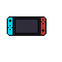

Montaż komputera z części komputerowych dla biura oraz dla gracza komputerowego

Kupując części do złożenia komputera w pierwszej kolejności musimy zadać sobie pytanie: Do czego ma być ten komputer?
Jeśli chcemy komputer do prostych działań biurowych, filmów czy przeglądania social media jego cena nie będzie zbyt wysoka, ale trzeba zapamiętać że jeśli będziemy chcieli robić coś więcej typu: tworzenie grafiki 3D, nagrywanie filmów, renderowanie, używanie maszyn wirtualnych będziemy potrzebowali mocniejszej jednostki.
Na co zwrócić uwagę:
Procesor: Przynajmniej dwa dwurdzeniowy, ale zawsze lepiej dopłacić do jednoski z czterema rdzeniami fizycznymi
RAM: minimum 4GB (najlepiej DDR4)
Karta graficzna: Tutaj wszystko zależy czy będziemy używać prostych programów czy bardziej złożonych. Z prostymi spokojnie poradzi sobie karta zintegrowana z procesorem, natomiast gdy chcemy używać bardziej wymagających programów należy zakupić kartę z conajmniej 2GB pamięci
Dysk twardy: Zależnie od naszych preferencji. Jeśli uważamy że potrzebujemy sporej ilości miejsca, warto spojrzeć na dyski HDD o pojemnościach 1TB+. Można także doinwestować i kupić szybszy dysk SSD, który pozwoli na szybsze włączanie się programów i szybszy zapis danych.
Jeśli chcemy komputer do grania w gry(tzw. Gamingowy) będziemy potrzebowali większego budżetu. Warto zaznaczyć że większość komputerów gamingowych nadaje się także do operowania na skomplikowanych i wymagających programach.
Będziemy musieli zwrócić uwagę na:
Procesor: minimum 4 rdzenie, procesor o wysokim taktowaniu
RAM: DDR4 16GB+, o wysokich taktowaniach
Karta graficzna: Wysokie taktowanie, jakość chłodzenia, przynajmniej 4GB pamięci(6GB będzie optymalną ilością na rok 2020)
Dysk: najlepiej 1TB HDD na dane i dysk SSD na instalacje systemu i paru gier(optymalnie 480GB)
Płyta główna: pozwalająca na montaż wszystkich komponentów i najlepiej żeby pozwalała na późniejszą rozbudowę jednostki
Zasilacz: Pozwalający na zasilenie wszystkich komponentów z zapasem energii(Warto dopłacić do zasilacza z certyfikatem sprawności.
Złożenie jednostki nie jest najtrudniejszym zadaniem, ale trzeba uważać żeby nie wygiąć/złamać części, które zakupiliśmy. W złożeniu komputera z pewnością pomogą liczne poradniki na internecie.
Jako przykład pozwolę sobie użyć filmu z kanału x-kom.